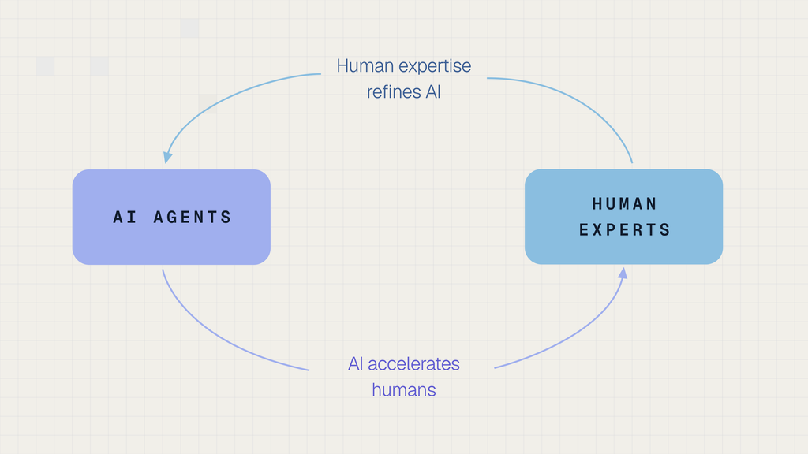

Executive Summary
스노클AI가 시리즈 E 투자로 3억 5,000만 달러를 받고 35억 달러의 회사 가치를 인정받았다. 2025년 5월 시리즈 D에서 1억 달러를 받으며 매겨진 13억 달러의 세 배에 가깝다. 이 회사는 원래 데이터에 라벨을 자동으로 붙여 주는 소프트웨어를 팔았다. 2025년 9월부터는 완성된 데이터셋과 강화학습 환경, 평가 과제를 직접 만들어 납품한다. 이번 투자는 파는 물건을 바꾼 지 1년 만에 나온 결과다.
회사가 내건 숫자는 연환산 매출 3억 7,500만 달러다. 1년이 안 돼 18배 넘게 늘었다는 설명이 붙어 있고, 로이터는 1년 전 수치를 약 2,000만 달러로 전했다. 배수가 큰 데에는 출발점이 작았던 영향이 크다. 연환산 매출은 12개월 동안 실제로 들어온 돈이 아니라 최근 실적을 1년 치로 환산한 숫자다.
1~3절은 회사 발표문·보도자료와 테크크런치·로이터 보도를 대조한 내용이고, 4절은 페블러스의 해석이다.
주요 수치
출처: 스노클AI 발표문·보도자료(2026-09-22), 테크크런치·로이터 보도. 약 9배는 이 글이 두 발표 수치를 나눈 값이다.
35억 달러
시리즈 E에서 인정받은 회사 값
2025년 5월 시리즈 D 때는 13억 달러였다. 그때 받은 돈은 1억 달러다
3억 7,500만 달러
회사가 밝힌 연환산 매출
12개월 동안 받은 돈이 아니라 최근 실적을 1년 치로 환산한 값이다. 회사는 발표 주에 이 선을 넘었다고 밝혔다
약 2,000만 달러
1년 전 연환산 매출
로이터 보도 기준이다. 3억 7,500만을 18로 나눈 값(약 2,100만)과도 맞는다
약 9배
회사 값을 연환산 매출로 나눈 배수
35억을 3억 7,500만으로 나누면 9.3이 나온다. 연환산 매출이 그대로 1년 매출이 된다는 전제가 깔린 배수다
도구를 팔던 회사가 완성품을 팔기 시작했다
스노클AI는 스탠퍼드 AI 연구실의 연구 과제에서 출발해 2019년에 회사로 독립했다. 공동 창업자이자 최고경영자인 알렉스 랫너가 그 연구를 이끌었다. 회사가 오래 팔아 온 것은 소프트웨어였다. 고객이 가진 데이터에 사람이 일일이 라벨을 붙이는 대신, 규칙과 모델로 라벨을 자동으로 붙이게 해 주는 도구다. 데이터를 만드는 일은 고객의 몫으로 남고, 그 일을 빠르게 해 주는 연장을 파는 구조였다.
이 구조에서는 팔 수 있는 값이 고객의 역량에 갇힌다. 연장을 쥐여 줘도 어떤 라벨이 옳은지 정할 수 있는 사람이 고객 쪽에 없으면 일이 진행되지 않는다. 소프트웨어 값은 자리 수와 사용량으로 정해지는데, 정작 어려운 부분인 판단은 고객이 떠안은 채로 남는다. 회사가 1년 사이에 바꾼 것이 그 경계다. 지금 스노클AI는 결과물을 판다. 전문가가 손을 댄 완성된 데이터셋, 모델을 훈련시킬 강화학습 환경, 모델의 실력을 확인할 평가 과제를 회사가 직접 만들어 납품한다. 회사 보도자료는 이 사업을 2025년 9월에 시작했다고 적었다.
고객으로는 프런티어 연구소와 하이퍼스케일러, 신생 모델 기업, 특정 산업에 특화한 AI 기업, 일반 기업, 미국 정부 기관이 발표문에 나열돼 있다. 테크크런치는 이 성장의 배경으로 고급 학습 데이터를 찾는 AI 연구소들의 수요를 들었다. 이번 투자는 인사이트 파트너스와 S32가 공동으로 이끌었고 기존 투자자 애디션이 크게 참여했다. 서드 포인트 벤처스와 마치 캐피털, 블럼버그 캐피털 등이 새로 들어왔고, 그레이록과 라이트스피드, GV, 웰스파고 등 기존 투자자도 함께했다.
만드는 방식도 다르다. 테크크런치는 이 회사의 방식을 혼합형이라고 불렀다. 사람 전문가를 중개하는 장터로만 움직이지 않고, 자사 소프트웨어와 모델로 데이터를 합성한 다음 그 옆에 도메인 전문가를 붙인다. 기계가 초안을 뽑고 사람이 판정하는 구조다. 전문가에게 나가는 돈이 경쟁사와 다르게 잡히는 이유도 여기에 있다.
스노클AI의 매출이 가파르게 오른 시점은 파는 물건의 단위를 바꾼 때와 겹친다. 라이선스를 팔 때는 고객이 몇 명이 쓰느냐가 값을 정하지만, 데이터셋을 팔 때는 그 데이터가 얼마나 어렵고 얼마나 많으냐가 정한다. 같은 기술로도 매출의 크기가 달라지는 이유다.
창업자가 붙인 이름, 데이터 1.0과 데이터 2.0
랫너는 이번 투자 유치를 알리는 글의 제목을 "데이터 2.0, 그리고 AI 데이터의 연구 시대"로 달았다. 그 안에서 AI 학습 데이터 시장을 두 단계로 갈라 놓는다. 앞 단계인 데이터 1.0은 "전부 물량에 관한 것이고, 대체로 인력 배치와 물류의 문제"다. 뒤 단계인 데이터 2.0은 "지극히 복잡하고 정밀하게 겨냥된 고품질 데이터를 어떤 차례로 먹일 것인가의 문제이며, 일차적으로는 연구와 기술의 문제"다.
같은 글은 이 구분을 거리에 빗대 다시 말한다. "첫 구간은 더 단순한 데이터의 물량이 끌고 가고, 마지막 구간은 더 복잡한 데이터의 품질이 끌고 간다." 모델이 쉬운 문제를 이미 다 풀어 버린 뒤에는 사람 손을 몇 배로 늘려도 성능이 움직이지 않고, 어려운 문제를 정확히 겨냥한 소수의 데이터만이 남은 차이를 만든다는 주장이다.
랫너는 이 구분을 코딩 데이터로 풀어 놓는다. 몇 해 전만 해도 대형 언어 모델은 코드 자동 완성조차 겨우 했고, 그래서 필요한 것은 사전 학습에 넣을 대량의 원시 코드, 그리고 지도 학습과 사람 선호 학습에 쓸 대량의 쉬운 코딩 문제와 코드 선호 라벨이었다. 지금은 여러 코딩 영역에서 모델이 사람을 넘어서는 수준에 다가서 있다. 그래서 쓸 만한 코딩 데이터와 강화학습 환경이 갖춰야 할 조건을 랫너는 다섯 가지로 적었다. 선임 엔지니어가 며칠이나 몇 주를 붙들고도 헤맬 만한 개발 과제에 가까울 것, 제품 규모의 결과물을 두고 미묘한 목표와 보상 신호를 담아낼 것, 모델이 틀리는 지점을 분포로 겨냥할 것, 모델이 규칙을 우회하거나 속이려 드는 시도를 견딜 것, 그리고 수백 가지 품질 검사를 통과할 것이다.
같은 패턴이 법률과 금융, 생물학에서도 나타난다. 예전에는 기본적인 챗봇 문답 과제나 선호 라벨을 만들어 줄 전문가를 충분한 수만큼 모으면 됐다. 지금 필요한 데이터 한 점은 사람이 며칠에서 몇 주를 들여야 하는 전문가 과제다. 회사 하나를 통째로 흉내 내는 환경이 필요한 경우까지 있다.
랫너의 결론은 두 문장이다. "프런티어 데이터는 더 이상 사람의 시간과 인원을 효율적으로 공급하는 것만으로는 풀리지 않는다." 그리고 "AI를 안전하게 측정하고 훈련시킬 데이터와 환경을 만드는 일은 가장 뛰어난 사람 전문가조차 혼자서는 감당하기 어려워지고 있다." 데이터 작업의 병목이 인원 수급에서 판단의 난이도로 옮겨 갔다는 진술이고, 이 회사가 왜 사람을 모으는 대신 데이터를 만들어 파는 쪽을 택했는지에 대한 설명이기도 하다.
랫너는 연구와 기술의 문제라는 말이 사람을 빼도 된다는 뜻은 아니라고 덧붙인다. 프런티어 데이터는 모델이 아직 모르는 무언가를 겨냥해야 값어치가 생긴다. 순수한 합성 데이터는 모델이 이미 아는 것과 상관이 높을 수밖에 없다. AI가 스스로 만든 데이터로 다시 학습하는 순환에 빠지면 모드 붕괴가 온다. 내놓는 답의 폭이 좁아지는 현상이다. 큰 모델의 능력을 작은 모델로 옮기는 증류를 빼고 나면, 사람이 고리 안에 남아 있는 데이터가 가장 값어치가 크다.
규범적인 이유도 발표문에 함께 있다. 데이터는 AI를 측정하고 사람의 가치와 판단에 맞추는 수단이다. 사람이 한 명도 끼지 않고 만든 데이터라면, 사람의 감독을 통째로 내려놓는 셈이다. 사람을 덜 쓰겠다는 말보다는, 사람의 자리를 검수와 판정 쪽으로 옮기겠다는 말에 가깝다.
2.1회사가 내놓은 증거 한 가지
주장을 받치는 사례로 발표문은 자사의 코딩 데이터 품질 검수 과정을 든다. 코딩 에이전트용 환경과 데이터를 만들 때 사람 전문가의 검수에 더해 수백 개의 전문화된 에이전트를 붙였다. 사람과 시중 대형 언어 모델만으로 검수하던 기준선과 견주어 검수 효율이 50% 넘게 오르고 검수 정확도가 15포인트 넘게 올랐다.
여기서 고리가 한 번 더 돈다. 사람이 대규모로 남긴 검수 결과를 다시 약한 지도 신호로 삼아 그 에이전트들을 학습시키고, 그렇게 길러진 에이전트는 전문화되지 않은 프런티어 모델 기준선보다 정확도가 2배 이상 높아진다는 수치가 뒤따른다. 회사는 이 되먹임 구조를 데이터를 위한 재귀적 자기개선 엔진이라고 부르고, 지금까지의 성장을 밀어 온 것이 이 고리라고 설명한다. 그래서 "사람과 AI 에이전트가 서로를 불려 가며 함께 일할 때에만 프런티어의 가속되는 수요를 감당할 수 있고, 앞으로 수십 년 동안 AI 발전의 운전석에 사람을 앉혀 둘 수 있다"는 문장이 나온다.

이 수치들은 회사가 자기 작업 과정을 자기 기준으로 측정한 값이다. 비교 대상인 기준선의 정의도 회사가 정했고, 제3자가 같은 조건에서 다시 확인한 기록은 공개돼 있지 않다. 그래서 여기서는 회사가 발표한 수치로만 적어 둔다.
데이터 1.0과 2.0이라는 구분에는 다른 효과도 있다. 1.0을 인력과 물류의 문제로, 2.0을 연구와 기술의 문제로 이름 붙이면, 사람을 많이 쓰는 방식으로 성장한 경쟁사들과 자기 회사를 갈라 세우는 효과가 따라온다. 업계 전반의 변화를 서술하는 말인 동시에, 이 회사가 파는 것을 설명하는 말이기도 하다. 둘 중 어느 쪽인지는 이 발표문 하나로는 알 수 없다.
이 주장이 이번에 처음 나온 것도 아니다. 랫너는 10년 전 스탠퍼드에서 연구 과제로 출발할 때의 논지를 같은 글에서 다시 꺼낸다. AI의 발전이 점점 데이터 중심으로 갈 것이므로 데이터 개발은 인력 배치와 크라우드소싱의 문제가 아니라 제대로 된 연구와 기술의 문제로 다뤄져야 한다는 내용이었다. 이번에 달라진 것은 이름이고, 랫너는 시장이 그 주장 쪽으로 옮겨 왔다고 본다.
3억 7,500만 달러에 붙은 조건
이번 발표에서 가장 많이 인용된 숫자는 연환산 매출 3억 7,500만 달러다. 연매출로 옮겨 적기 전에 세 가지를 알아 둬야 한다.
- • 1년 동안 번 돈이 아니다. 최근 한 달이나 한 분기 실적을 1년 치로 늘린 값이라, 지금 속도가 이어진다는 전제가 붙는다.
- • 18배는 출발점이 작아서 커 보인다. 로이터는 1년 전 연환산 매출을 약 2,000만 달러로 전했다. 회사는 데이터 서비스를 2025년 9월에 시작했다고 했지만, 같은 이름의 상품은 2025년 5월 시리즈 D 보도자료에 이미 정식 출시로 나온다.
- • 경쟁사 매출과 바로 비교할 수 없다. 머코어(20억 달러)·핸드셰이크(10억 달러)·마이크로1(5억 달러)의 숫자는 매출의 60~70%를 전문가에게 지급하기 전의 총액이다. 스노클AI는 전문가 비용을 매출원가로 빼고 적는다고 설명한다.
같은 시장의 회사들이 매출을 서로 다른 정의로 적는다. 숫자를 나란히 놓기 전에 무엇을 잰 값인지부터 확인해야 한다.
페블러스가 이 소식을 주목하는 이유
이번 발표에서 페블러스가 눈여겨본 것은 투자 규모보다 랫너가 내세운 논리다. 그 논리는 페블러스가 창업 때부터 쌓아 온 기술, 그리고 지향하는 방향과 겹친다.
4.1겨냥하려면 빈자리부터 찾아야 한다
랫너가 데이터 2.0의 핵심으로 내세운 주장은, 어려운 문제를 정확히 겨냥한 소수의 데이터가 남은 차이를 만든다는 것이다. 페블러스는 같은 생각에서 출발했다. 2021년 창업할 때의 첫 과제가 모델에 모자란 데이터만 정밀하게 겨냥해 합성하는 일이었다.
겨냥하려면 데이터의 어느 자리가 비어 있는지부터 알아야 한다. 페블러스의 데이터클리닉은 데이터를 고차원 공간에 펼쳐 분포의 밀도와 빈 공간을 찾아낸다. 이 진단 기술과, 찾아낸 빈자리를 채우는 합성 데이터 생성 기술은 페블러스가 미국 특허(US 12,481,720, US 11,967,308)로 확보한 핵심 기술이다. 랫너는 좋은 데이터의 조건으로 모델이 틀리는 지점을 분포로 겨냥할 것을 꼽았는데, 데이터클리닉이 하는 일이 그 지점을 찾는 것이다.
4.2데이터를 기르는 고리
스노클AI는 사람 전문가와 AI 에이전트가 서로를 개선하는 고리를 재귀적 자기개선 엔진이라고 불렀다. 페블러스는 방식은 다르지만 같은 역할을 하는 구조를 갖추고 있다. 데이터 그린하우스는 데이터를 진단하고, 모자란 곳은 합성 데이터로 채우고 불필요한 데이터는 덜어 낸 뒤 다시 진단하는 고리를 돌린다. 페블로심은 시뮬레이션으로 그 합성 데이터를 만들어 내는 생성 환경이다. 페블러스는 이 고리를 AI 에이전트로 넓힌 에이전트 그린하우스로 확장하고 있다.
4.3데이터를 수렵하지 않고 경작한다
차이도 분명하다. 스노클AI는 데이터를 직접 만들어 팔고, 페블러스는 아직 데이터를 만들어 팔지 않는다. 그래도 두 회사가 꾸는 꿈은 닮았다. 필요한 데이터를 찾아 모으는 일에서, 무엇이 모자란지 진단하고 겨냥해서 기르는 일로 옮겨 간다는 것이다.
페블러스는 이 생각을 "데이터를 수렵하지 않는다. 데이터를 경작한다."라는 말로 표현해 왔다. 흩어진 데이터를 찾아다니는 수렵은 운에 기대고, 진단하고 겨냥해서 기르는 경작은 설계에 기댄다. 이번 투자는 시장이 데이터를 경작하는 일에 값을 매기기 시작했다는 신호다. 페블러스가 이 소식을 주목하는 이유도 거기에 있다.
참고문헌
- 1.Ratner, A. (2026, September 22). "Data 2.0 and the Research Era of AI Data." Snorkel AI Blog.
- 2.Temkin, M. (2026, September 22). "Snorkel AI triples valuation to $3.5B as demand for AI training data booms." TechCrunch.
- 3.Snorkel AI. (2025, May 29). "Snorkel AI Announces $100 Million Series D and Expanded Platform to Power Next Phase of AI with Expert Data." Business Wire.
- 4.Snorkel AI. (2026, September 22). "Snorkel AI Raises $350M Series E." Snorkel AI Press.
- 5.Reuters. (2026, September 22). "Snorkel AI valued at $3.5 billion amid surging demand for complex AI training data." Reuters.